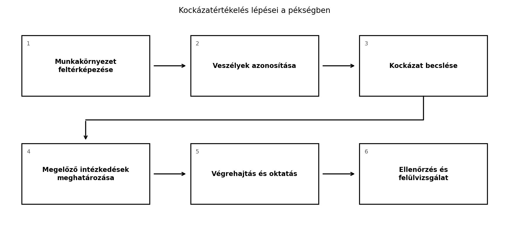

A munkavédelem nem papírmunka a szekrényben, hanem az a rendszer, amely megakadályozza, hogy hajnali kettőkor műszak közben baleset érjen a dagasztógépnél, a forró kemencénél vagy a sikamlós padlón. Pékként te leszel az, aki naponta dönt arról, hogy betartod-e a szabályokat: felveszed-e a védőkesztyűt, leállítod-e a gépet, mielőtt belenyúlsz, jelented-e a repedt sütőlemezt. Ebben az alfejezetben a magyar munkavédelmi rendszer alapjait tanulod meg úgy, hogy a pékségi helyzetekre tudjad alkalmazni.
Képzeld el, hogy belépsz a pékségbe hajnali 3 órakor. A portánál átveszed a műszakot, felveszed a tiszta munkaruhát, hajhálót és csúszásmentes cipőt. A dagasztás előtt ellenőrzöd, hogy a gép védőrácsa a helyén van, a vészleállító gomb működik, és a padló nem csúszik a kiömlött víztől. A kemence bekapcsolása előtt megnézed, hogy nincs-e gázszag, és a sütőlemez fogásához védőkesztyűt használsz. Ezek a mozzanatok mind a munkavédelem rendszerébe illeszkednek: a munkáltató kialakította a feltételeket, te pedig betartod a szabályokat. Ha bármelyik hiányzik, a rendszer hibája balesethez vezethet.
Definíció. A munkavédelem a munkavégzés biztonságának és egészségességének megteremtésére irányuló szabályok, szervezési és műszaki intézkedések összessége. Célja, hogy a munkavállaló a munkahelyen ne szenvedjen balesetet, ne károsodjon az egészsége, és a munkakörülmények ne okozzanak hosszú távú megbetegedést.
A munkavédelem két nagy területre oszlik:
Definíció. A veszélyes termelési tényező olyan hatás, amely hirtelen balesetet okozhat (például forgó gépalkatrész, forró felület, leeső tárgy). Az ártalmas termelési tényező olyan hatás, amely hosszabb expozíció után betegséget okozhat (például lisztpor, zaj, tartós állómunka).
A pékségben tipikus veszélyes tényezők: - mechanikai veszélyek: vágó, nyíró, becsípő, behúzó elemek; - hőveszély: forró kemencefelület, gőz, forró zsiradék; - villamos veszély: hibás kábelek, nedves környezet; - csúszás, botlás, elesés: sikamlós padló, tészta- vagy lisztpor a földön; - zuhanás: magasban tárolt anyagok, létra.
Tipikus ártalmas tényezők: - lisztpor (légúti irritáció, foglalkozási megbetegedés); - zaj (dagasztó-, osztógép, ventilátor); - meleg vagy hideg környezet; - nehéz fizikai munka, kényszertesthelyzet; - pszichoszociális terhelés: éjszakai műszak, hajnali kezdés, sürgető határidők.
A munkahelyi munkavédelmet Magyarországon rétegzett jogi és műszaki szabályozás határozza meg.
Előírás. A munkavédelem alapvető hazai jogszabálya a munkavédelemről szóló 1993. évi XCIII. törvény (rövidítve Mvt.). A törvény meghatározza a munkáltatók és munkavállalók általános jogait és kötelezettségeit, a munkavédelmi hatóság feladatkörét, az oktatás, az orvosi alkalmasság, a kockázatértékelés és a munkavédelmi érdekképviselet kereteit. A pontos szakaszok és a hatályos szöveg külön ellenőrzendő, mert a törvényt többször módosították. (ellenőrizendő: hatályos Mvt. szövege, konkrét szakaszok)
A törvény alatt további végrehajtási rendeletek, magyar szabványok, vállalati munkavédelmi szabályzatok és technológiai utasítások építik fel a rendszert:
Példa. Egy pékségben a dagasztógép használatát az Mvt. általános munkáltatói kötelezettsége, egy berendezésekre vonatkozó biztonsági szabvány, a gép gyártói kezelési utasítása, valamint a vállalati munkavédelmi szabályzat együttesen szabályozza. A péknek ezek közül a gyártói utasítást és a vállalati szabályzatot közvetlenül ismernie kell, mert azok mondják meg, mikor nyúlhat a géphez.
A munkavédelmi rendszer két aktív szereplőre épül: a munkáltatóra, aki a biztonságos feltételeket megteremti, és a munkavállalóra, aki a szabályokat betartja. A pék tanuló a gyakorlati képzés során a munkavállalóval azonos kötelezettségeket visel, de felügyeletet igényel, ezért egyes munkaműveleteket csak oktatás után, ellenőrzött körülmények között végezhet.
Szabály. A munkáltató legfontosabb munkavédelmi kötelezettségei:
Szabály. A munkavállaló legfontosabb munkavédelmi kötelezettségei:
Figyelem. A munkavállaló nem hivatkozhat arra, hogy a védőeszközt kényelmetlen viselni, vagy hogy a munkáltató nem szólt minden alkalommal. A védőeszköz használata és a szabályok betartása saját érdeke, és a munkaszerződésből, valamint az Mvt.-ből fakadó kötelezettsége. A pék tanuló számára a védőeszköz viselése nem választható, hanem a gyakorlati képzés feltétele.
A biztonságos munkavégzés első lépése, hogy a dolgozó tudja, mi veszélyezteti, és hogyan védekezhet. Ezért az Mvt. előírja a munkába lépés előtti munkavédelmi oktatást.
Szabály. A munkavédelmi oktatás nem egyszeri felolvasás, hanem a munkakörre szabott gyakorlati felkészítés. A pékségben ez magában foglalja például:
Az oktatást a munkáltató dokumentálja. A tanuló a gyakorlati képzés elején külön oktatást kap, és csak utána mehet a gépek közelébe.
Előírás. Munkaköri orvosi alkalmassági vizsgálat nélkül a munkavállaló nem foglalkoztatható. A vizsgálat célja annak eldöntése, hogy a dolgozó egészségileg alkalmas-e az adott munkakörre, például a hajnali műszakra, a nehéz fizikai terhelésre, a lisztporos környezetre. A vizsgálatot a munkáltató kezdeményezi, a dolgozó pedig köteles megjelenni. (ellenőrizendő: hatályos foglalkoztatás-egészségügyi előírások)
Foglalkoztatási tilalmak. Vannak olyan munkavállalói csoportok, akiket bizonyos munkakörökben tilos foglalkoztatni, vagy csak korlátozottan szabad. A pékségben ilyenek lehetnek:
Szabály. Az egyedül végzett munka tilalma azt jelenti, hogy bizonyos veszélyes tevékenységeket a pékségben nem szabad egyedül végezni, mert baleset esetén nincs, aki segítsen. Ilyen például a létra használata magasban, a kemence szervizelése, a nagy tömegű tésztaadagok kézi mozgatása vagy a lúgos perecoldat kezelése. A munkáltató a kockázatértékelésben határozza meg, mely műveletekhez szükséges második személy. A tanuló soha nem dolgozhat egyedül olyan géppel, amelyre még nem kapott betanítást. (ellenőrizendő: a pékség kockázatértékelésében rögzített tilalmak)
Definíció. A kockázat annak a valószínűsége, hogy egy veszélyes vagy ártalmas tényező ténylegesen sérülést vagy egészségkárosodást okoz, és a bekövetkező károsodás súlyossága együttesen.
Egyszerű képlettel:
ahol a kockázat, a károsodás bekövetkezésének valószínűsége, a károsodás súlyossága. Ez nem pontos mérőszám, hanem a kockázat becslésére szolgáló szemléletes segédeszköz. Az üzemi gyakorlatban gyakran 1–3 vagy 1–5 skálán értékelik a két tényezőt, és a szorzat alapján sorolják be a kockázatot alacsony, közepes vagy magas szintre. Tanulási példaként az 1–3 skálán: – alacsony, – közepes, – magas; a sávokat az üzem kockázatértékelési módszere rögzíti (ellenőrizendő: a pékség kockázatértékelése).
A mátrixban a szorzat sorról sorra és oszlopról oszlopra nő: a jobb felső sarok a gyakori és súlyos (R = 9), a bal alsó a ritka és enyhe (R = 1) eset. A HTML-kiadásban a két csúszkával kiválasztott cellához a kategória és a javasolt intézkedéstípus is megjelenik.
A kockázatértékelés az a folyamat, amelyben a munkáltató felméri a munkahelyi veszélyeket és ártalmakat, megbecsüli a velük járó kockázatot, és meghatározza a megelőzéshez szükséges intézkedéseket. A kockázatértékelést írásban dokumentálni kell, és rendszeresen, illetve jelentős változás esetén felül kell vizsgálni.
A kockázatértékelés lépései pékségi munkahelyen:
A folyamatot egy flow ábra is szemléltetheti:

Előírás. A munkáltatónak a kockázatértékelést a munkavédelmi törvény szerint el kell végeznie, és írásban kell dokumentálnia. A dokumentációnak tartalmaznia kell a veszélyeket, a becsült kockázatot, a meghatározott intézkedéseket és azok határidejét. A kockázatértékelést akkor is frissíteni kell, ha új gépet helyeznek üzembe, új munkakört hoznak létre, vagy baleset történt. (ellenőrizendő: hatályos Mvt. és a vonatkozó kormányrendeletek konkrét előírásai)
A munkavédelmi rendszer akkor működik jól, ha a dolgozók szervezetten is képviselhetik érdekeiket. Erre szolgál a munkavédelmi érdekképviselet.
Definíció. A munkavédelmi képviselő a munkavállalók által választott személy, aki a munkáltatóval együttműködve figyelemmel kíséri a munkavédelmi szabályok betartását, részt vesz a kockázatértékelésben, a munkabalesetek kivizsgálásában, és jogosult a munkavédelmi hiányosságokat jelezni a munkáltatónak, szükség esetén a munkavédelmi hatóságnak.
A munkavédelmi képviselőt a munkavállalók választják, a munkavállalói létszámtól függően: kisebb létszámnál a munkáltató a munkavállalókkal közvetlenül konzultál, nagyobb létszámnál munkavédelmi bizottság alakulhat (ellenőrizendő: Mvt. létszámküszöbei). A képviselő nem szankcionálhat, de joga van:
Példa. Egy pékségben a munkavédelmi képviselő észleli, hogy a tésztaosztó gép vészleállítója nehezen elérhető, és a védőrács ki tud akadni. Javaslatot tesz a munkáltatónak a gomb áthelyezésére és a rács reteszelésének megerősítésére. A munkáltató intézkedik, és az intézkedést a kockázatértékelésben rögzítik. Ha a munkáltató nem tenné meg, a képviselő a munkavédelmi hatósághoz fordulhatna.
Egy pék tanuló a spirálkaros dagasztógépnél dolgozik. A feladat annak felmérése, mekkora kockázatot jelent a forgó dagasztókar, ha a védőrácsot ki lehet nyitni anélkül, hogy a motor leállna.
Ez a példa mutatja, hogy a kockázatértékelés nem fiókban őrzött papír, hanem mindennapi döntések alapja.
Egy pékségben a munkáltató biztosít hőálló védőkesztyűt a kemence melletti sütőlemez fogásához. Egy tapasztalt pék szerint a kesztyű „lassítja a mozgást”, ezért nem használja, és puszta kézzel húzza ki a forró lemezt. Az egyik műszakban megégeti a tenyerét.
Elemzés: - A munkáltató teljesítette kötelezettségét, mert megfelelő védőeszközt biztosított, és oktatta a használatát. - A pék megszegte a munkavállalói kötelezettségét, mert nem használta rendeltetésszerűen a védőeszközt. - A baleset közvetlen oka a védőkesztyű elhagyása volt. - A munkáltató a munkabalesetből eredő kárért főszabályként vétkességétől függetlenül felel; a munkavállaló vétkes közrehatása (a kiadott kesztyű szándékos mellőzése) a kártérítés mértékét csökkentheti. Ha a védőeszköz használatát nem ellenőrizték, a munkáltató felelőssége erősebb (ellenőrizendő: Mt. kártérítési szabályai). Az oktatás és az eszközátadás dokumentálása ezért nem mentesít, hanem a közrehatás megítélésénél számít. - Helyes gyakorlat: a műszakvezető minden műszakban ellenőrzi a védőkesztyű használatát, és munkajogi következményt alkalmaz a szabálytalanul dolgozó ellen a belső szabályzat szerint.
Hajnali fél négy van, a tanuló a gömbölyítőgép mellett áll. A gép furcsa hangot ad, és a tészta beragad a dob alá. A tanuló azt gondolja, gyorsan lekaparja, mielőtt a műszakvezető észrevenné. Felemeli a védőburkolatot, mert úgy érzi, gyorsabb. A gép motorja még forog, a tészta beakad, a keze a dob felé csúszik. Szerencsére a mellette dolgozó pék kiált, és a tanuló visszarántja a kezét. Baleset nem történt, de a tanulság megvan: a védőburkolatot tilos menet közben kinyitni. Az, hogy a burkolat járó motorral felemelhető volt, a reteszelés hibája: a gépet le kellett tiltani, és a reteszelést is meg kellett javíttatni. Beragadt tésztához csak leállított, leválasztott, újraindítás ellen biztosított gépen szabad nyúlni. A tanuló ezt jelentette a műszakvezetőnek, aki kikapcsoltatta a gépet, és a karbantartó megjavította a reteszelést. A tanuló számára ez a helyzet lett a legjobb munkavédelmi oktatás.
Cél: a tanuló tanulja meg felismerni a munkahelyi veszélyeket és értékelni a kockázatot.
Eszközök és anyagok: kockázatértékelési táblázat, toll, fényképezőgép, zseblámpa, létra (csak stabil, ellenőrzött állapotban, második személy jelenlétében használd).
Higiénia. A séta előtt a tanuló viselje a munkaruhát, hajhálót, csúszásmentes cipőt; a munkaterületet úgy vizsgálja, hogy közben ne szennyezzen élelmiszert, és ne kerüljön lisztpor a szemébe.
Gépbiztonság. A séta során gépet csak leállított, a hálózatról leválasztott, újraindítás ellen biztosított (lakat, tiltó címke) állapotban, a forgó részek teljes megállása után szabad vizsgálni (részletesen: Biztonságos tisztítás, karbantartás és gépápolás); a védőburkolatot csak oktató jelenlétében, az üzemeltetési utasítás szerint szabad megnyitni.
A séta lépései:
Ellenőrzési pontok: a gép vészleállítója elérhető-e; a padló nem csúszik-e; a védőburkolatok zártak-e; a tűzoltó készülék szabadon van-e.
Dokumentálás: a tanuló töltse ki a kockázatértékelési táblázatot, és adja le az oktatónak.
A munkavédelmi rendszer „minősége” azt jelenti, hogy a munkavállalók biztonságban dolgoznak, és a munkáltató folyamatosan fenntartja a megelőző intézkedéseket. Ezt a következőképpen lehet ellenőrizni:
A gyakorlatban a munkavédelmi megfelelést a munkahelyi bejárások, az auditok és a hatósági ellenőrzések biztosítják.
Hiba: A pék nem viseli a védőkesztyűt, mert „csak pár másodpercre” fogja meg a forró lemezt. Ok: a kényelem és a megszokás fontosabb, mint a biztonság. Helyes: a védőkesztyűt mindig használni kell, a rövid idejű forró felületi érintkezés is égést okozhat.
Hiba: A dagasztógépnél a tanuló úgy nyúl a tálba, hogy nem kapcsolja ki a gépet, mert „még forog, de lassan”. Ok: a kockázat alábecsülése, figyelmetlenség. Helyes: csak leállított, a hálózatról leválasztott, újraindítás ellen biztosított (lakat, tiltó címke) gépen, a forgó részek teljes megállása után szabad beavatkozni; részletesen: Biztonságos tisztítás, karbantartás és gépápolás.
Hiba: A munkavállaló észleli, hogy a vészleállító gomb nem működik, de nem jelenti, mert „nem akar bajt”. Ok: a munkavédelmi kultúra hiánya. Helyes: a hibát azonnal jelenteni kell, és a gépet le kell tiltani a javításig.
Hiba: A kockázatértékelést elkészítik, de soha nem frissítik, amikor új gépet üzemelnek be. Ok: a dokumentumot öncélú papírnak tekintik. Helyes: a kockázatértékelést élő dokumentumként kell kezelni, és minden változásnál aktualizálni.
1. feladat (A) Nevezd meg a munkavédelem két nagy területét, és írj mindegyikhez egy pékségi példát.
2. feladat (A) Sorold fel a munkáltató három legfontosabb munkavédelmi kötelezettségét, és a munkavállaló három legfontosabb munkavédelmi kötelezettségét.
3. feladat (B) A dagasztógépnél a védőrács reteszelése hibás. A veszély valószínűségét 2-re, a súlyosságot 3-ra értékeljük (1–3 skála). Számítsd ki a kockázati pontszámot, és sorold be alacsony, közepes vagy magas kategóriába. Javasolj intézkedést.
4. feladat (B) Egy pék tanuló a munkavédelmi oktatáson nem vette komolyan a lisztpor elleni védekezést, és nem visel porálarcot a lisztzsák ürítésekor. Magyarázd el, miért fontos ez a védelem, és melyik munkavédelmi területhez tartozik (munkabiztonság vagy munkaegészségügy). Mi a tanuló és mi a munkáltató felelőssége ebben a helyzetben?
5. feladat (C) Tervezd meg egy pékségi munkaterület (például a kemencetér) kockázatértékelését. Azonosíts benne legalább három veszélyes vagy ártalmas tényezőt, becsüld meg a kockázatot, és rendelj hozzájuk megelőző intézkedést. Írd le, hogyan ellenőriznéd a megelőzés hatékonyságát.
6. feladat (D) A tanpékségben a tanuló azt látja, hogy a tésztanyújtó gép vészleállítója le van ragadva, és a védőburkolat repedt. A műszakvezető azt mondja, „ne szólj, így is termelni kell”. Mit tegyen a tanuló a munkavédelmi szabályok szerint? Melyik kötelezettsége vonatkozik rá, és milyen következménye lehet, ha hallgat?
Önellenőrzés – válaszok
Hamis. A munkavédelem közös feladat: a munkáltató biztosítja a feltételeket, a munkavállaló betartja a szabályokat és használja a védőeszközöket.
Munkabiztonság: hirtelen balesetek megelőzése, például a dagasztógép védőrácsa. Munkaegészségügy: hosszú távú egészségkárosodás megelőzése, például a lisztpor elleni légzésvédelem.
Veszélyek azonosítása, kockázat becslése, megelőző intézkedések meghatározása (és végrehajtás, ellenőrzés).
Például magasban végzett munka létra használatával, lúgos oldat kezelése, vagy nagy tömegű tészta kézi mozgatása. A tanuló bizonyos gépek mellett nem dolgozhat egyedül, amíg nem kapott betanítást.
, ahol a valószínűség, a súlyosság.
Javaslatot tehet a munkáltatónak, és ha az nem intézkedik, a munkavédelmi hatósághoz fordulhat.
Feladatok megoldásai
1. feladat (A) Munkabiztonság: csúszásmentes padló a tésztavíz miatt. Munkaegészségügy: zajvédő használata a dagasztógép mellett.
2. feladat (A) Munkáltató: kockázatértékelés, védőeszköz biztosítása, munkavédelmi oktatás. Munkavállaló: védőeszköz használata, veszélyjelentés, a szabályok betartása.
3. feladat (B) (1–9 skálán magas). Intézkedés: a gép azonnali leállítása, reteszelés javítása karbantartóval, a javításig a gép használatának tiltása.
4. feladat (B) A lisztpor belégzése hosszú távon légúti betegséget okozhat, ez munkaegészségügyi kockázat. A tanuló felelőssége a porálarc viselése és a munkavédelmi oktatáson tanultak betartása. A munkáltató felelőssége, hogy megfelelő porálarcot biztosítson, oktassa a használatát, és ellenőrizze.
5. feladat (C) Például: hőveszély a forró kemencefelülettől – valószínűség közepes (2), súlyosság súlyos (3), → magas kockázat, intézkedés: hőálló kesztyű, elkerítés, oktatás. Gázszag, esetleges gázszivárgás – alacsony valószínűség (1), súlyos következmény (3), → közepes kockázat, intézkedés: gázérzékelő, rendszeres ellenőrzés. Csúszásveszély a hideg padlón – gyakori, enyhe-közepes → közepes, intézkedés: csúszásmentes cipő, azonnali feltakarítás. Az ellenőrzés: munkahelyi bejárások, hőmérsékletmérés, a védőeszközök állapotának vizsgálata, baleseti nyilvántartás elemzése.
6. feladat (D) A tanuló köteles az észlelt veszélyt azonnal jelenteni a műszakvezetőjének, és ha az nem intézkedik, magasabb szintű vezetőnek vagy a munkavédelmi képviselőnek. A gép használatát meg kell tagadnia, mert a védőberendezés hiánya közvetlen baleseti veszélyt jelent. Ha hallgat, megszegi a munkavállalói kötelezettségét, és baleset esetén felelősséggel tartozhat.
A munkavédelem a munkavégzés biztonságának és egészségességének rendszere; két területe a munkabiztonság (hirtelen balesetek) és a munkaegészségügy (hosszú távú megbetegedések). A magyar munkavédelmi rendszer alapja a munkavédelemről szóló 1993. évi XCIII. törvény (Mvt.), amely meghatározza a munkáltató és a munkavállaló kötelezettségeit. A munkáltató köteles kockázatértékelést végezni, védőeszközöket biztosítani, munkavédelmi oktatást tartani, orvosi alkalmassági vizsgálatot kezdeményezni. A munkavállaló köteles a szabályokat betartani, a védőeszközt használni, veszélyt jelenteni. A kockázat a valószínűség és a súlyosság szorzata (); a kockázatértékelés lépései a feltérképezés, veszélyazonosítás, becslés, megelőző intézkedések, végrehajtás és ellenőrzés. A munkavédelmi képviselő a dolgozók érdekeit képviseli, részt vesz a kockázatértékelésben, bejáráson és balesetvizsgálatban. Ezeket a fogalmakat használjuk a Munkahelyek kialakítása, közlekedés, anyagmozgatás és raktározás alfejezetben a konkrét munkahelyi követelményeknél, és a Munkajogi alapok és munkaviszony alfejezetben a munkavállalói jogok és kötelezettségek kapcsán.